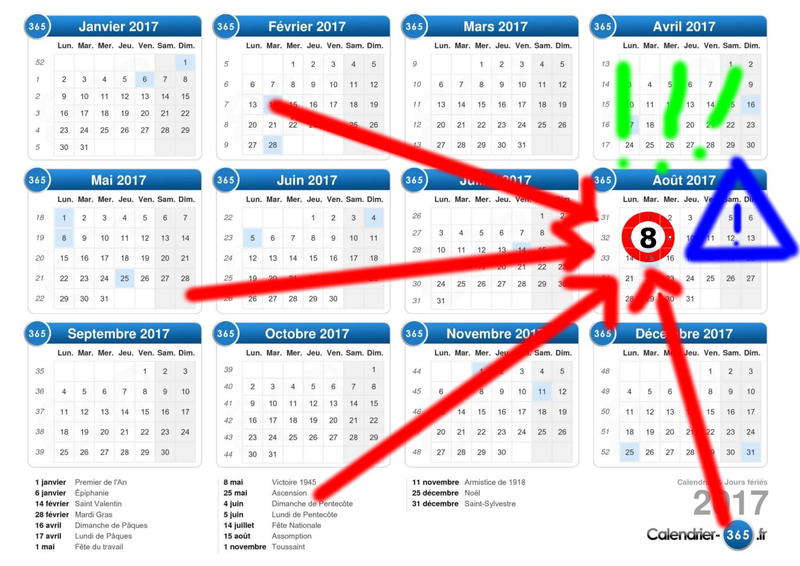
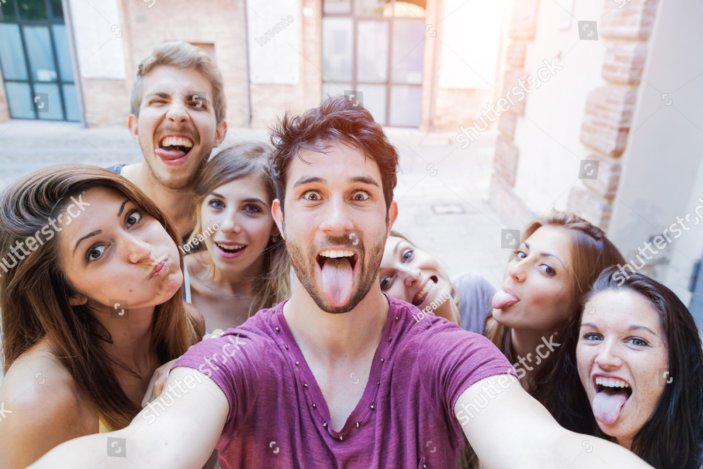

TOUT CE QU'IL FAUT SAVOIR SUR CETTE JOURNÉE QUI RESTERA CHÈRE À NOS CŒURS
Quoi ?
Alors que CyberSCADA vivait les plus belles heures de son existence, une tradition se mit en place : le MacDo tradi. Le mardi, jour de projet, l'essentiel des membres du groupe se retrouvait le midi au restaurant McDonald's de Kergaradec pour un moment de franche camaraderie.
Petit à petit, une maxime émergea pour désigner cette plaisante coutume : « le mardi c'est MacDo » (aussi énoncée sous la forme « le mardi c'est projet », il y a querelle d'experts sur le dicton original).
Au cours de l'été 2016, alors que nos héros se trouvaient dispersés à travers l'Europe, une idée émergea : et si Rémi payait son MacDo ? Le principe est simple : Rémi offre la tournée de MacDo à tous ses camarades réunis.
L'idée laissa d'abord l'interessé dubitatif avant qu'il ne finisse par changer d'avis, au bénéfice d'une campagne de lobbying intensif. La première édition de « Rémi paie son MacDo » finit par avoir lieu le 19 septembre 2016 (un lundi mais les bougres avaient faim et ne pouvaient attendre).
Retrouvez les détails de cette journée sur la page dédiée.
C'est à la deuxième édition de cette événement que nous vous convions aujourd'hui.
Quand ?
La deuxième édition de « Rémi paie son MacDo » aura lieu le mardi 8 août 2017.

Où ?
L'événement aura lieu, comme la fois précédente, au restaurant McDonald's de Kergaradec.
Qui ?
Sont conviés évidemment les fiers aventuriers issus de CyberSCADA, ainsi que leur fidèle compagnon Sancho Panza. Rémi est par ailleurs libre de convier et d'éconduire n'importe qui. Après tout, c'est lui qui paie.

[ Accueil ]